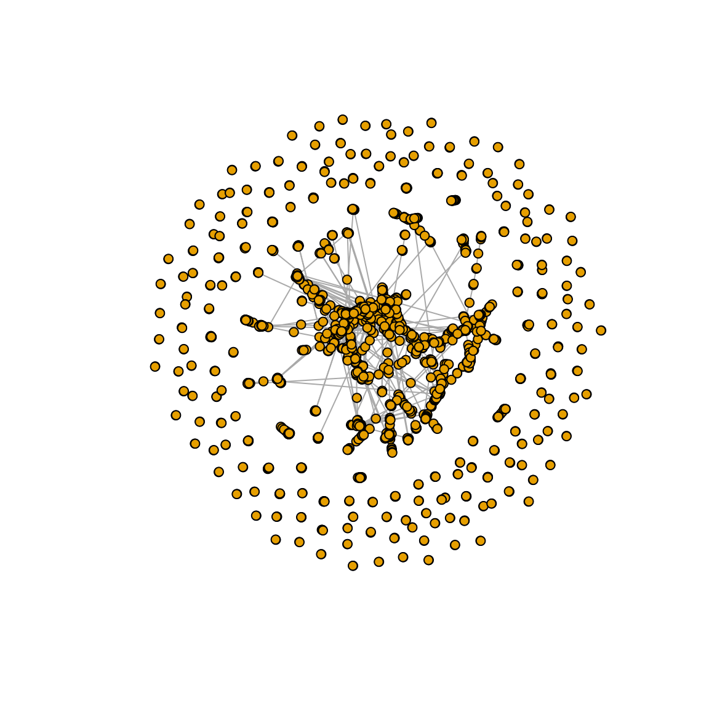
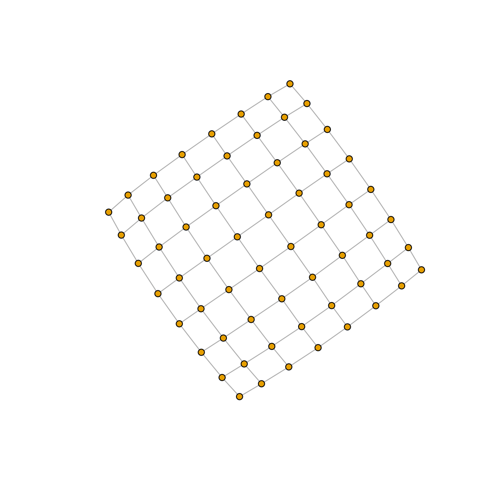

10-06-2020default_pairwise_usage.RmdThe netdist package currently considers two broad methodologies for network comparison, namely Netdis and NetEmd. Netdis considers multiple variants (via background expectations) to capture the dissimilarity between the local structure of networks exhibited by the occurrence of small subgraphs on 3, 4 and 5 nodes. NetEmd is also a method to capture the dissimilarity between networks using subgraph counts, but it has in addition been defined for any type of network features; for example eigen distributions. The variants of Netdis are controlled by the input selected for the background expectations, whereas the variants of NetEmd are controlled indirectly by the user by the selection of the network features being compared via NetEmd (by default this package uses subgraph counts as features).
The following shows a quick introduction to the simplest functions of the package, and to some of the variants of Netdis and NetEmd.
For other vignettes in this package see the “Menu”.
The netdist package also includes examples of a few real networks. These are protein interaction networks (PPI) of a few Herpes virus and of the bacteria Escherichia Coli . In these networks, each node represents a protein and each link represents an interaction between proteins. See help(virusppi).
Although the virusppi list of PPI networks is loaded along with the netdist package, the following code shows how to read a network data from a file in disk:
# Set source directory for Virus protein-protein interaction edge files stored in the netdist package.
source_dir <- system.file(file.path("extdata", "VRPINS"), package = "netdist")
# Load query graphs as undirected igraph objects, with no loops, multiple edges or degree zero nodes.
graph_1 <- read_simple_graph(file = file.path(source_dir, "EBV.txt"),
format = "ncol")
graph_2 <- read_simple_graph(file = file.path(source_dir, "ECL.txt"),
format = "ncol")
# Herpes virus EBV protein-protein interaction graph with 60 nodes and 208 edges.
graph_1
#> IGRAPH 24d036b UN-- 60 208 --
#> + attr: name (v/c)
#> + edges from 24d036b (vertex names):
#> [1] A73 --BALF3 A73 --BARF0 A73 --BBLF2 A73 --BDRF1 A73 --BFRF4
#> [6] A73 --BGLF2 A73 --BGLF3 A73 --BGLF5 A73 --BLLF2 A73 --BTRF1
#> [11] BALF3--BBLF2 BALF3--BDRF1 BALF3--BFRF4 BALF3--BGLF5 BALF3--BTRF1
#> [16] BALF3--BALF1 BALF3--BALF2 BALF3--BORF1 BALF3--BALF4 BALF3--BFLF2
#> [21] BALF3--BPLF1 BALF3--BALF5 BALF3--BBLF4 BALF3--BDLF2 BALF3--BdRF1
#> [26] BALF3--BERF3 BALF3--BHRF1 BALF3--LMP2A BARF0--BBLF2 BARF0--BFRF4
#> [31] BARF0--BSRF1 BARF0--BALF4 BARF0--BPLF1 BARF0--BALF5 BARF0--BDLF2
#> [36] BARF0--BdRF1 BARF0--BERF3 BARF0--BGLF1 BARF0--LMP2A BBLF2--BDRF1
#> + ... omitted several edges
#Note this graph is the same as
# virusppi$EBV
# Herpes virus ECL protein-protein interaction graph with 1941 nodes and 3989 edges.
graph_2
#> IGRAPH 900e8b6 UN-- 1941 3989 --
#> + attr: name (v/c)
#> + edges from 900e8b6 (vertex names):
#> [1] B1882--B1888 B1882--B1945 B1882--B1946 B1882--B1886 B1882--B1887
#> [6] B1882--B1939 B1882--B1938 B1882--B1884 B1882--B1883 B1882--B3210
#> [11] B1882--B1881 B1882--B4355 B1882--B1922 B1882--B1890 B1882--B1889
#> [16] B1888--B1886 B1888--B1887 B1888--B1884 B1888--B1883 B1888--B1881
#> [21] B1888--B4355 B1888--B1890 B1888--B1889 B1888--B1421 B1888--B3072
#> [26] B1888--B1885 B0728--B0729 B0728--B0724 B0728--B0726 B0728--B0727
#> [31] B0729--B0724 B0729--B3734 B0729--B0726 B0729--B0727 B0729--B0720
#> [36] B0729--B3236 B1812--B3360 B1812--B1260 B1812--B1261 B1812--B1263
#> + ... omitted several edges
#Note this graph is the same as
# virusppi$ECL
#A simple visualization of the graphs.
plot(graph_1,vertex.size=4,vertex.label=NA)
plot(graph_2,vertex.size=4,vertex.label=NA)
Other networks loaded in this package are discussed in “NetEmd: World trade networks”. You can also see ?virusppi and ?worldtradesub.
The next two sections will provide a basic introduction and usage of both NetEmd and Netdis.
(Extracted from Wegner et al. (2017)): NetEmd is based on the idea that the information encapsulated in the shape of the degree distribution and other network properties reflects the topological organization of the network. From an abstract point of view, NetEmd views the shape of a distribution as a property that is invariant under linear deformations i.e\(.\) translations and re-scalings of the axis.
Based on the previous ideas NetEmd uses the following measure between distributions \(p\) and \(q\) that are supported on \(\mathbb{R}\) and have non-zero, finite variances: \[\begin{equation}\label{emdmet} EMD^*(p,q)=\mathrm{inf}_{c\in\mathbb{R}}\left( EMD\big(\tilde{p}(\cdot+c),\tilde{q}(\cdot)\big)\right), \end{equation}\] where \(EMD\) is the earth mover’s distance and \(\tilde{p}\) and \(\tilde{q}\) are the distributions obtained by rescaling \(p\) and \(q\) to have variance 1. More precisely, \(\tilde{p}\) is the distribution obtained from \(p\) by the transformation \(x\rightarrow \frac{x}{\sigma(p)}\), where \(\sigma(p)\) is the standard deviation of \(p\). For probability distributions \(p\) and \(q\) with support in \(\mathbb{R}\) and bounded absolute first moment, the \(EMD\) between \(p\) and \(q\) is given by \(EMD(p,q)=\int_{-\infty}^\infty|F(x)-G(x)|\,\mathrm{d}x\), where \(F\) and \(G\) are the cumulative distribution functions of \(p\) and \(q\) respectively.
Now, for two networks \(G\) and \(G'\) and for a given set \(T=\{t_1,t_2,...,t_m\}\) of network features, the \(NetEmd\) measure corresponding to \(T\) is: \[\begin{equation}\label{eq:def_netemd} NetEmd_T(G,G')=\frac{1}{m}\sum_{j=1}^{m} NetEmd_{t_j} (G,G'), \end{equation}\] where \[\begin{equation} NetEmd_{t_i} (G,G')=EMD^*(p_{t_i}(G),p_{t_i}(G')), \end{equation}\] and where \(p_{t_i}(G)\) and \(p_{t_i}(G')\) are the distributions of \({t_i}\) on \(G\) and \(G'\) respectively. \(NetEmd_{t_i}\) can be shown to be a pseudometric between graphs for any feature \(t\), that is it is non-negative, symmetric and satisfies the triangle inequality.
# Set source directory for Virus protein-protein interaction network edge files stored in the netdist package.
source_dir <- system.file(file.path("extdata", "VRPINS"), package = "netdist")
# Load query graphs as igraph objects
# Herpes virus EBV protein-protein interaction graph with 60 nodes and 208 edges.
graph_1 <- read_simple_graph(file.path(source_dir, "EBV.txt"),
format = "ncol")
# Herpes virus ECL protein-protein interaction graph with 1941 nodes and 3989 edges.
graph_2 <- read_simple_graph(file.path(source_dir, "ECL.txt"),
format = "ncol")
# One to one NetEmd comparison.
netemd_one_to_one(graph_1=graph_1,graph_2=graph_2,feature_type="orbit",smoothing_window_width = 1)#Use of smoothing window 1 is given for discrete integer distributions. If the network features are considered continuous variables smoothing_window_width equal to zero is recommended.
#> [1] 0.5163894
#Laplacian
Lapg_1 <- igraph::laplacian_matrix(graph = graph_1,normalized = FALSE,sparse = FALSE)
Lapg_2 <- igraph::laplacian_matrix(graph = graph_2,normalized = FALSE,sparse = FALSE)
#Normalized Laplacian
NLapg_1 <- igraph::laplacian_matrix(graph = graph_1,normalized = TRUE,sparse = FALSE)
NLapg_2 <- igraph::laplacian_matrix(graph = graph_2,normalized = TRUE,sparse = FALSE)
#Spectra (this may take a couple of minutes).
props_1 <- cbind(L.Spectra= eigen(Lapg_1)$values, NL.Spectra= eigen(NLapg_1)$values)
props_2 <- cbind(L.Spectra= eigen(Lapg_2)$values, NL.Spectra= eigen(NLapg_2)$values)
head(props_1,n=3)
#> L.Spectra NL.Spectra
#> [1,] 28.20519 1.761482
#> [2,] 23.52699 1.659654
#> [3,] 20.58109 1.620187
head(props_2,n=3)
#> L.Spectra NL.Spectra
#> [1,] 58.14333 2
#> [2,] 42.13825 2
#> [3,] 33.30286 2
netemd_one_to_one(dhists_1 = props_1,dhists_2 = props_2,smoothing_window_width = 0)#If the network features are considered continuous variables smoothing_window_width equal to zero is recommended.
#> [1] 0.1818771(Extracted from Ali et al. (2014)): Netdis counts small subgraphs \(w\) on \(k\) nodes for all 2-step ego-networks, \(k=3,4,5\). These counts are centred by subtracting the expected number of counts \(E_w\). These centred counts of each network are then compared thus leading to the Netdis statistic.
Netdis is constructed as follows:
Let \(N_{w,i}(G)\) be the number of induced occurrences of small graphs \(w\) in the 2-step ego network of vertex \(i\). Now, bin all 2-step ego-networks of network \(G\) according to their network density. Let \(E_w(G,\rho)\) be the expected number of occurrences of \(w\) in an ego-network whose density falls in density bin \(\rho\). For a given network \(G\) compute the centred subgraph counts as \[ S_w(G)=\sum\limits_{i }{\bigg (N_{w,i}(G)- E_w(G, \rho(i)) \bigg )}, \] where \(i\) is a node in \(G\) and \(\rho(i)\) the density bin of the 2-step ego-network of node \(i\).
Now, to compare networks \(G_1\) and \(G_2\), set \[ \displaystyle netD_2^S(k) = \tfrac{1}{ \sqrt{ M(k)} } \sum\limits_{w \in A(k)} \bigg ({ \tfrac{S_w(G_1) S_w(G_2)} {\sqrt{S_w(G_1)^2 + S_w(G_2)^2}} }\bigg ), \quad k=3,4, 5, \] where \(A(k)\) is the set of connected subgraphs of size \(k\), and where \(M(k)\) is a normalising constant so that \(netD_2^S(k)\in[-1,1]\). \(M(k)\) is equal to \[ M(k) = \sum\limits_{w \in A(k)} \left( \tfrac{ S_w(G_1)^2 }{\sqrt{S_w(G_1)^2 + S_w(G_2)^2}} \right) \sum\limits_{w \in A(k)} \left(\tfrac{ S_w(G_2)^2 } {\sqrt{S_w(G_1)^2 + S_w(G_2)^2}} \right) . \] The corresponding Netdis statistic is defined as \[Netdis(k)=netd_2^S(k)=\tfrac{1}{2}(1-netD_2^S(k)) \in [0,1].\] Small values of Netdis suggest higher `similarity’ between the networks. By default Netdis uses subgraphs on \(k=4\) nodes.
The selection of a gold-standard graph as a substitute for \(E_w\) could be done when such graph is known to be a good proxy for \(E_w\), or alternatively as a good reference point for the comparison. This option will focus on detecting discrepancies between the networks relative to the ego-network structure of the reference network / gold-standard graph and which is summarized in \(E_w\).
# Lattice graphs to be used as a gold-standard reference point
goldstd_1 <- igraph::graph.lattice(c(8,8)) #Graph with 8^2 nodes
goldstd_2 <- igraph::graph.lattice(c(44,44)) #Graph with 44^2 nodes
plot(goldstd_1,vertex.size=4,vertex.label=NA)
plot(goldstd_2,vertex.size=4,vertex.label=NA)
# Netdis using the goldstd_1 graph as gold-standard reference point
netdis_one_to_one(graph_1= graph_1, graph_2= graph_2, ref_graph = goldstd_1)
#> netdis3 netdis4
#> 0.1422771 0.2517043
# Netdis using the goldstd_2 graph as gold-standard reference point
netdis_one_to_one(graph_1= graph_1, graph_2= graph_2, ref_graph = goldstd_2)
#> netdis3 netdis4
#> 0.1401654 0.2505384(Extracted from Ospina-Forero et al. (2018)): Instead of considering an approximation based on an observed gold-standard network whose selection may be difficult, \(E_w\) is computed independently for each graph, based on a Geometric-Poisson (GP) approximation of the distribution of the number of occurrences of subgraph \(w\). It assumes that \(N_{w,i} \sim GP(\lambda^{\rho(i)}_k, \theta^{\rho(i)}_w)\), where \(\lambda^{\rho(i)}_k\) is the Poisson parameter indexed by the size of subgraph \(w\) and the density bin \(\rho(i)\); and where \(\theta^{\rho(i)}_w\) is the geometric parameter indexed by subgraph \(w\) and density bin \(\rho(i)\). \(E_w(G, \rho(i))\) is taken as the mean of the GP approximation, i.e. \(\lambda^{\rho(i)}_k/\theta^{\rho(i)}_w\).
As \(\lambda^{\rho(i)}_k\) and \(\theta^{\rho(i)}_w\) are not known, they are estimated as follows: Let \(x_{w,d}^j\) be the number of subgraphs \(w\) on the 2-step ego-network \(j\) of density bin \(d\), and let \[ \bar{X}_{w,d}=\frac{1}{q} \sum_{j=1}^q x_{w,d}^j, \qquad V^2_{w,d}=\frac{1}{q-1} \sum_{j=1}^q (x_{w,d}^j - \bar{X}_{w,d})^2 , \] where \(q\) is the number of ego-networks in density bin \(d\). Then, \[ \hat{\lambda}^{d}_{k}= \frac{1}{l} \sum_{h \in A(k)} \frac{2 (\bar{X}_{h,d})^2}{V^2_{h,d}+\bar{X}_{h,d}} , \qquad \hat{\theta}^{d}_w= \frac{2\bar{X}_{w,d}}{V^2_{w,d}+\bar{X}_{w,d}}, \] where \(l\) is the number of connected subgraphs of size \(k\), for example, \(l=6\) for \(k=4\). These estimators are based on the moment estimators of a GP random variable and the proposal made by (Picard et al.(2008)), where the total count of each individual subgraph could be thought as the sum of the total subgraph counts over multiple ``clumps’’ of edges that appear across the network.
This variant focuses on detecting more meso-level discrepancies between the ego-network structures.
#Netdis using the Geometric-Poisson approximation as a way to obtain background expectations.
netdis_one_to_one(graph_1= graph_1, graph_2= graph_2, ref_graph = NULL)
#> netdis3 netdis4
#> 0.8822527 0.1892716Comparing the networks via their observed ego counts without centring them, (equivalent to using expectation equal to zero). This variant thus focus on detecting small discrepancies between the networks.
#Netdis using no expectations (or equivalently, expectation equal to zero).
netdis_one_to_one(graph_1= graph_1, graph_2= graph_2, ref_graph = 0)
#> netdis3 netdis4
#> 0.00761545 0.02106628W. Ali, T. Rito, G. Reinert, F. Sun, and C. M. Deane. Alignment-free protein interaction network comparison. Bioinformatics, 30:i430–i437, 2014.
A. E. Wegner, L. Ospina-Forero, R. E. Gaunt, C. M. Deane, and G. Reinert. Identifying networks with common organizational principles. Journal of Complex networks, 2017.
L. Ospina-Forero, C. M. Deane, and G. Reinert. Assessment of model fit via network comparison methods based on subgraph counts. Journal of Complex Networks, page cny017, August 2018.
F. Picard, J.-J. Daudin, M. Koskas, S. Schbath, and S. Robin. Assessing the exceptionality of network motifs. Journal of Computational Biology, 15(1):1–20, 2008.